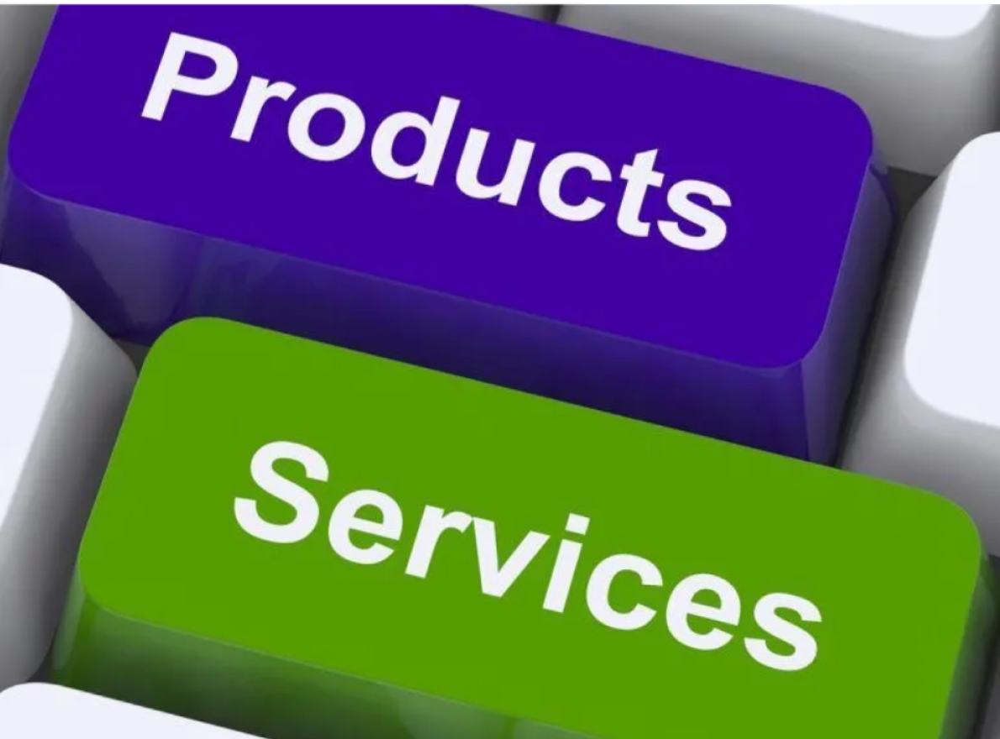

Age of Intelligence
Shop IT Product
 shop the full selection nowIntelligent Marketing Platform
Create different sales platforms to realise a different sense of customer experience.
Rich Functional Components
Rich functional components, enjoy all kinds of functions, cost-effective, stable products; continuous iterative updates.
Welcome to INT-IT Company, Australia's premier market leader in ICT gadgets and computer products. At INT-IT Company, we pride ourselves on providing our customers with the latest technology, smart products, great value service and unrivalled customer support.
Located in Kemps Creek, Sydney, Australia, we can conveniently serve our valued customers throughout Australia. Whether you are a small business owner, a student or a technology enthusiast, our team of professionals are on hand to meet your technology needs.
What sets us apart from our competitors is our commitment to excellence. We believe that every customer deserves the best, and we strive to deliver on that promise every day. Whether you're looking for a new laptop, a state-of-the-art smartphone, or any other ICT gadget, you can trust us to have the perfect solution for you.
In addition to our extensive product range, we pride ourselves on our customer support policy. We understand that technology can be confusing, so we are always ready to help you. Our team of experts is ready to help you with any questions or concerns you may have, and we also offer a range of support options to ensure you get the help you need, when you need it.
Thank you for visiting INT-IT Company. We look forward to meeting your technical and product needs and providing you with the best experience possible.